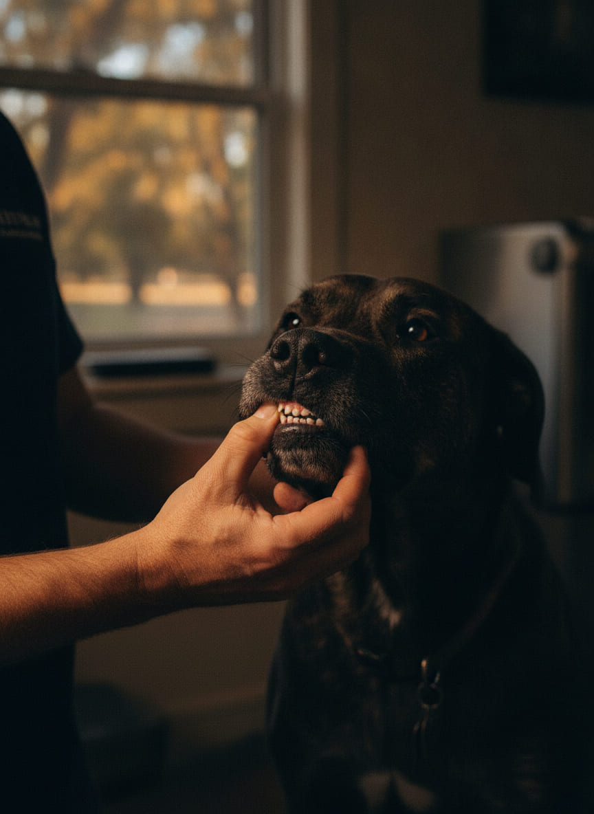
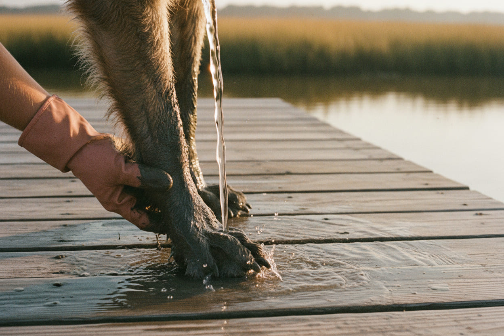
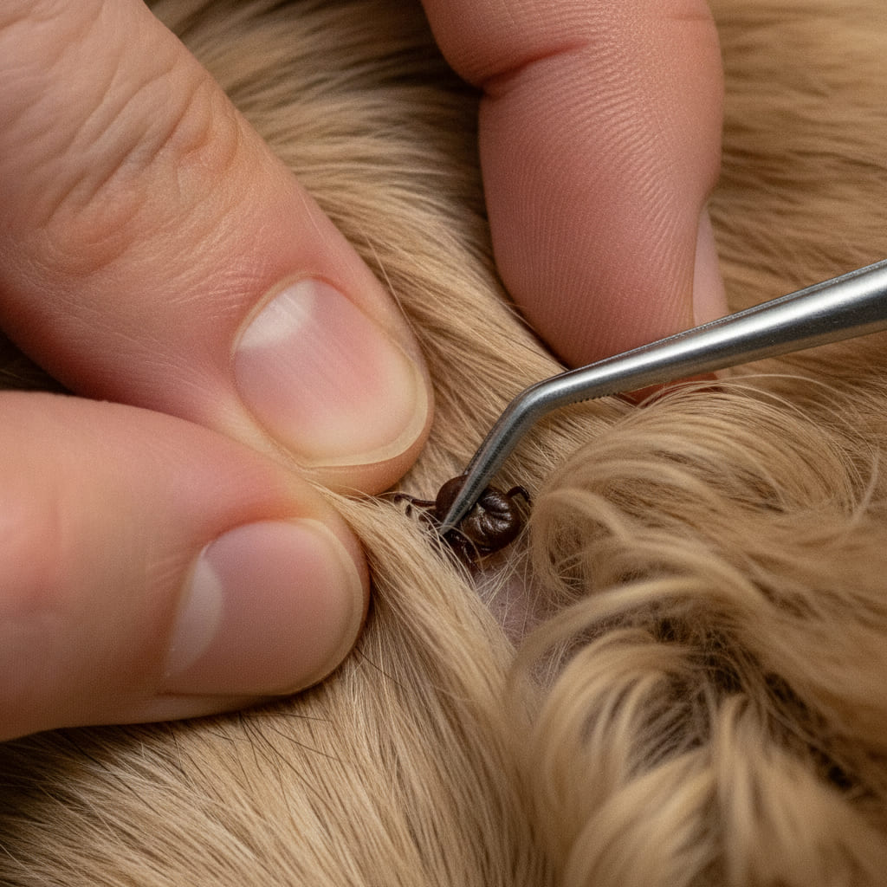
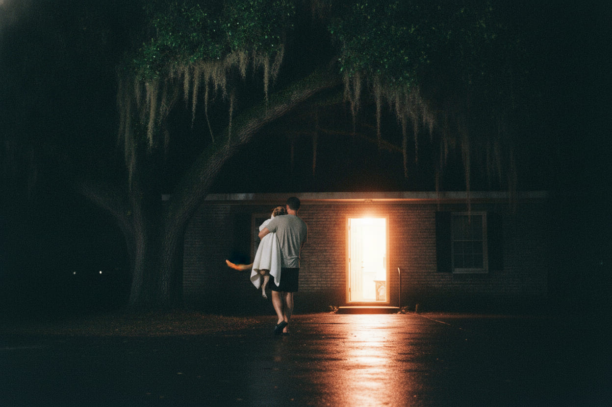
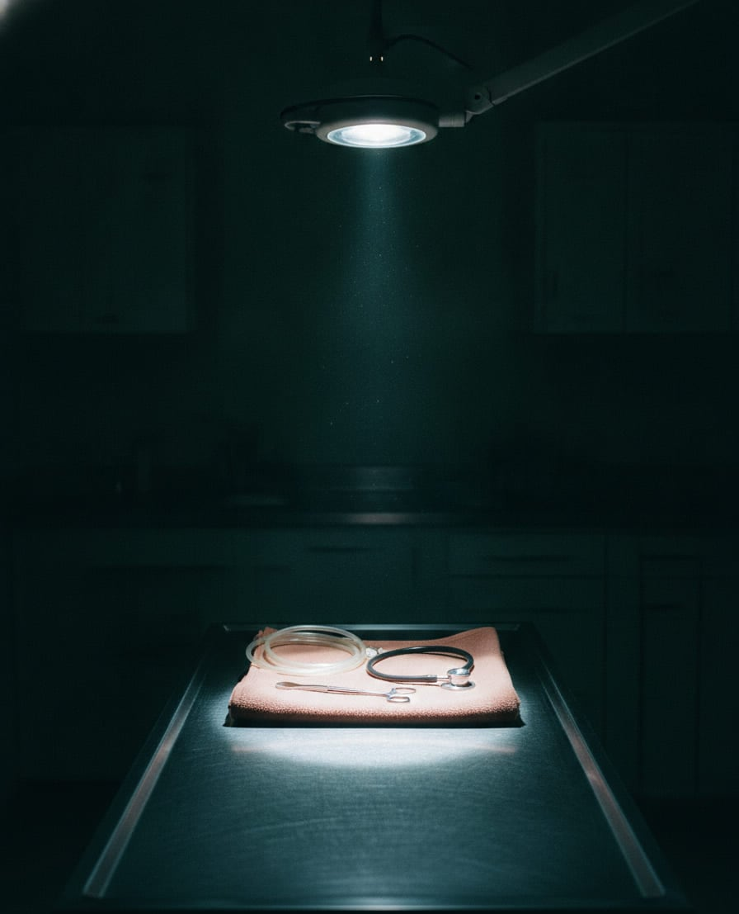
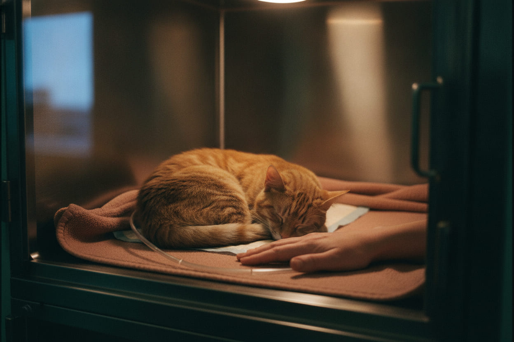
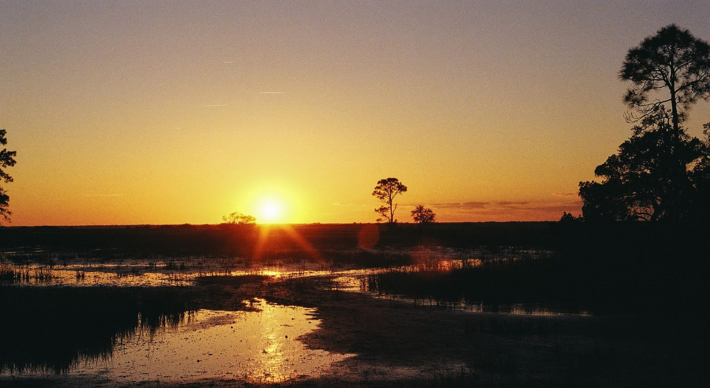

Sandfly · LaRoche Avenue · Savannah
Dogs and cats, seen the same day.
A full-service small-animal hospital on LaRoche Avenue — wellness and sick visits, surgery, dentistry with full-mouth radiographs, and a laboratory in the building.
Mon–Thu 7:30–6 · Fri 7:30–5 · Sat 8–1
- Same-day sick appointments, most days of the week
- A night line answered by one of our own doctors
- Being looked at costs nothing — client or not

What we do
Six rooms, one hallway, and very few referrals.
Almost everything a dog or a cat needs happens in this building, on the same day you bring them in. What we cannot do here, we say so on the first visit.
Wellness and sick visits
Nose to tail, and out loud. You hear what we hear as we hear it — gums, pulse quality, chest, belly, joints, teeth.
$68
Year-round prevention
Heartworm, flea and tick, twelve months a year. Georgia coast dosing, not the label on the box.
Dog under 50 lb — $41 a month
Dentistry
Full-mouth radiographs every time. Two thirds of what hurts a dog's mouth is under the gum line, where a light does not reach.
From $520
Ultrasound and internal medicine
Abdominal imaging in house, read the same hour. Dr. Odom does not send a picture out and wait three days for a sentence.
Same-day reading
Soft-tissue surgery
Spay, neuter, mass removals, foreign bodies. One technician stays on the monitor and nothing else, from induction to standing.
Estimate before, not after
Laboratory, in house
Blood chemistry, cytology, urine. Most answers before you leave, because a number tomorrow is a different animal.
Results the same visit
Who we look after
Dogs and cats, from Sandfly to the Isle of Hope.
Two doctors and two licensed technicians on the east side of Savannah. Most of our patients live within four miles of the building, walk the same creeks and come back with the same things on them.
Neighborhoods we see every week
- Sandfly
- Isle of Hope
- Dutch Island
- Thunderbolt
- Georgetown
- Whitemarsh
- Wilmington Island
- Skidaway
A dog that walks the creek comes back with the creek on it. Pluff mud, oyster shell and water that is saltier than it looks — we see all three in the same week, every week, and we know what each one does.

How an exam starts
The first thing we look at is the color of the gum.
Lift the lip. Press the gum with a thumb until the color goes out of it. Let go and count. If the pink comes back before two seconds, blood is still reaching the far end of the animal — and we know that before any machine tells us.
Press 02 — it refills in 1.8 seconds
Swatch 02 is the color of this page. It is also the color of a gum that is doing its job, which is why we picked it.
Six readings, in the order we rule them out
- 01 PaleAnemia, or blood that is not being moved. Hemorrhage until proven otherwise.
- 02 NormalClay pink, wet, refilling under two seconds. Nothing else to do but keep going.
- 03 Brick redVessels wide open. In August that is heat. Any month, it can be sepsis.
- 04 YellowJaundice. The liver, the bile duct, or red cells breaking down faster than they are made.
- 05 Blue-greyNot enough oxygen arriving. This one we do not finish reading before we act.
- 06 MuddyShock. Tissue running out of oxygen at the far end. The worst color on the card.
Prevention · Chatham County
Down here the season never closes.
Six months of heartworm prevention is a northern idea. It was written for a state where the water freezes. On the Georgia coast the mosquito does not leave, the fleas survive the winter and the ticks work on cool days. Twelve doses. Every year. We are not selling you a seventh month — we are selling you the six the northern calendar forgets.
Twelve doses, not six. The label was written for a colder state.

One tick, in fur that hides it.
Ehrlichiosis, Lyme and spotted fever all arrive the same way and none of them announce themselves. The four-way panel is a drop of blood and twenty minutes, and we run it before the season people think of, not after.
Heartworm and tick-borne 4Dx panel — $52
Sago palm
Planted in half the squares downtown. The seed is the worst part of the plant, and one is enough to take a liver.
Oyster shell
A shell bank cuts a pad like a blade and the cut goes deeper than it looks. We flush those the same day, not the next one.
Creek water
A dog that drinks the creek drinks salt. On a hot afternoon that alone is enough to put an animal on fluids.
Ten to four
Bright red gums in August are not excitement. They are heat, and heat is the one that moves fastest.
After hours — (912) 555-0148
You will not get a recording.

A recording sends you forty minutes up the interstate with an animal on your lap. Ours is a phone that a doctor carries. Tuesday and Thursday nights, that is Dr. Ansley, who has spent eleven of her nineteen years working after dark.
A doctor answers, not a service. If it rings twice, we are washing our hands.
We ask four things: the gums, the breathing, the belly, and when it started.
We tell you to come in, or we tell you honestly that it can wait until 7:30.
If you come in, the door is unlocked and somebody is standing in it.
After-hours intake, established patients — $185

What it costs
Being looked at costs nothing.
Gums, pulse, breathing, temperature. We do that at the door, for anyone, client or not. We tell you what we see before we tell you what it costs, and nothing gets added to an estimate while you are standing in the parking lot.
No appointment needed to be looked at
- Triage on arrivalNo charge
- Wellness exam$68
- Heartworm and tick-borne 4Dx panel$52
- Year-round prevention, dog under 50 lb$41 a month
- After-hours intake, established patients$185
- Dental with full-mouth radiographsFrom $520
Estimates are written before anything begins and we call you before a number moves. Payment is due at the visit.
The people who answer
Four of us, and you will meet all four.
-
Dr. Marlowe Ansley, DVM
Owner — emergency and critical care
Nineteen years, eleven of them on nights. She carries the after-hours phone on Tuesdays and Thursdays and answers it herself.
-
Dr. Cassie Odom, DVM
Internal medicine — abdominal ultrasound
Scans in house and reads her own images the same hour. If she cannot see it, she says so out loud instead of ordering the next thing.
-
Tanice Deveaux, LVT
Head technician
Runs the treatment floor and the schedule that keeps it honest. She is usually the one who meets you at the door after six.
-
Wren Hollowell, LVT
Anesthesia and monitoring
One job during a procedure: the animal breathing on the table. Nothing else is allowed to take her attention.

Visit us
Where the road bends toward the river.
Low brick building on LaRoche, past the bend, before the bridge. Gravel lot, two live oaks over it, and the marsh smell that means you are close.
Sandfly crossroads at top left · the hospital at the bend · Herb River running south to the Moon
- Address3512 LaRoche Avenue
Savannah, GA 31404 - Front desk(912) 555-0132
- After 6 p.m.(912) 555-0148
- Emailfrontdesk@herbriveranimal.com
- Mon – Thu7:30 a.m. – 6 p.m.
- Friday7:30 a.m. – 5 p.m.
- Saturday8 a.m. – 1 p.m.
- SundayClosed — night line answered
